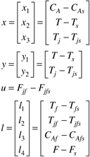
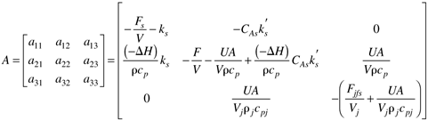
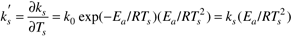
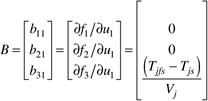
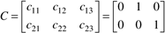

| [ Team LiB ] |
|
Appendix M8.1For Equations (M8.12) we develop a linear state space model, with the states, outputs, input, and disturbances as the following deviation variables:  The Jacobian matrix elements are  where  The first column of the B matrix is (this column is related to input 1, the jacket feed flow rate)  If both the reactor temperature (state 2) and the jacket temperature (state 3) are measured for a cascade control structure, the measured output matrix is  |
| [ Team LiB ] |
|